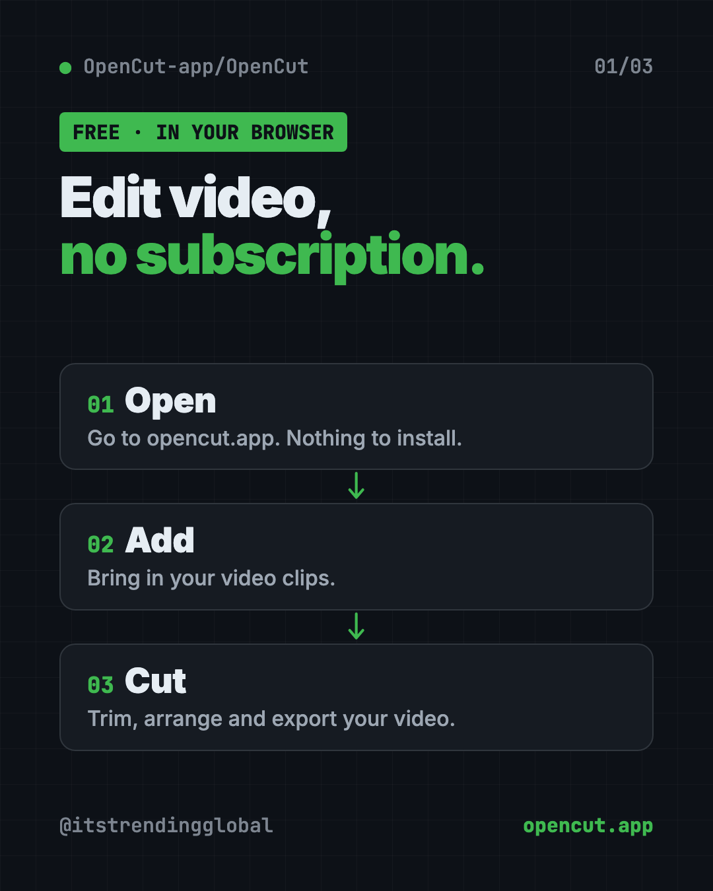
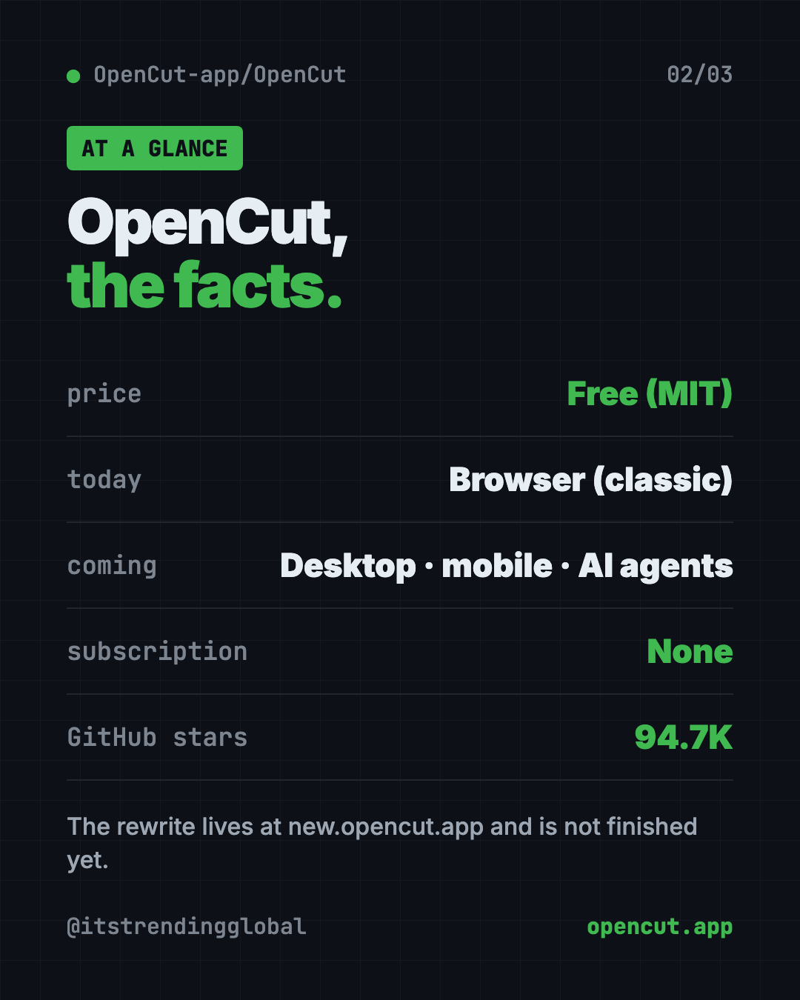
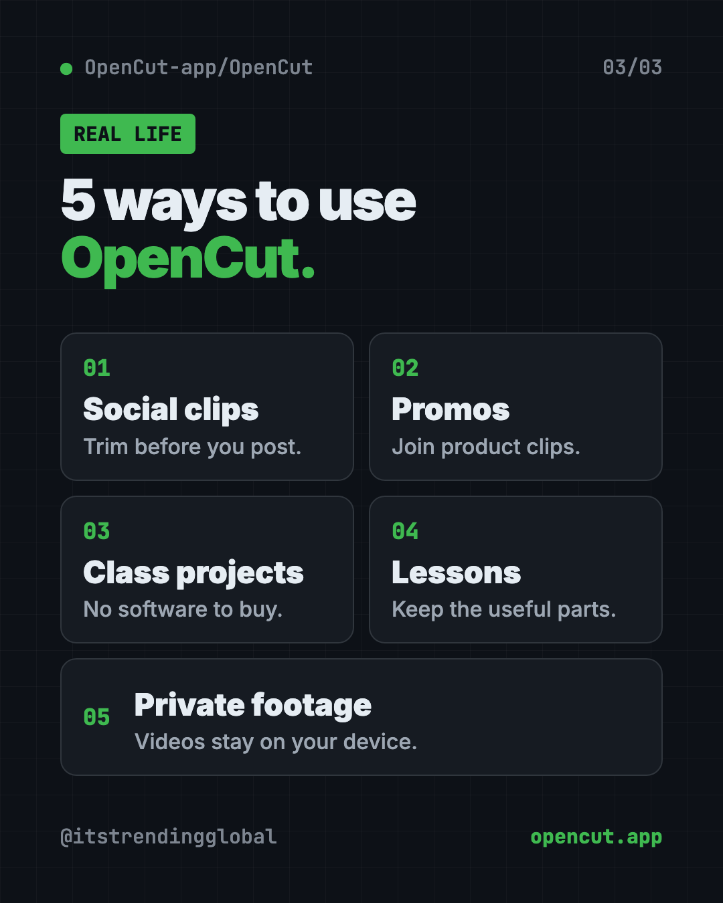

OpenCut: Free CapCut Alternative, Open Source (2026 Guide)
- Published 15 Oct 2026
- Updated 16 Oct 2026
- 7 min read
- License MIT
- By the ITG Now team
OpenCut is a free CapCut alternative: an open-source video editor you can use in your web browser at opencut.app. There's no subscription, and the code is public for anyone to check.
Simple video editing shouldn't cost a monthly fee. Yet many editors lock basic features behind a paywall. OpenCut started as an answer to that. This guide explains what works today, what's coming in the big rewrite, and how to get started in under a minute.
See all free alternatives to CapCut
Key takeaways
- Free and open source. MIT license, about 94.7K stars on GitHub.
- Use it in your browser now. opencut.app runs the classic version, with nothing to install.
- Your videos stay on your device, according to the original project's README.
- A full rewrite is underway. It promises desktop, mobile and browser apps from one codebase, plugins and AI agent support.
- The rewrite isn't ready yet. The README says the classic version is "the one to reach for today."
What is OpenCut?
OpenCut is a video editor. You bring in clips, cut them and put them together into one video.
The README describes it as "a free and open source video editor for web, desktop, and mobile." On GitHub, the project calls itself "the open-source CapCut alternative." CapCut is a popular video editing app.
The original project gave three reasons for existing:
- Privacy. "Your videos stay on your device."
- Free features. It says most basic CapCut features are now paywalled.
- Simple. People want editors that are easy to use.

Which OpenCut version should you use?
This part trips people up, so here it is plainly. There are two versions right now:
| Version | Where | Status |
|---|---|---|
| Classic | opencut.app | Works today. The README says this is "the one to reach for today." |
| Rewrite | new.opencut.app | Being built from the ground up. Not finished. |
The classic code now lives in a separate project, opencut-classic, which is archived and no longer updated. The website at opencut.app still runs it until the rewrite is ready to take over.
⚠️ Heads up: Because the classic code isn't maintained anymore, don't expect new features there. Use it for simple edits, and keep an eye on the rewrite.
How to use OpenCut (real examples)
- Trim a clip for social media. Cut the boring start and end off a phone video before you post it.
- Make a quick promo. Join a few product clips into one short video for your shop's page.
- Edit a class project. Students can put together a group video without buying software.
- Cut a lesson video. Teachers can trim a recorded lesson down to the useful parts.
- Keep private footage private. The original README says your videos stay on your device, which helps for family or client clips.
💡 Tip: Plan your cuts before you start. Write down the 3 or 4 moments you want to keep. Editing goes much faster.
What's coming in the OpenCut rewrite?
The README lists what the team is building:
- Desktop, mobile and browser apps from one shared core, written in Rust (a fast programming language).
- Third-party plugins, which are add-ons made by other people, built in from the start.
- An Editor API, so other programs can control the editor.
- An MCP server, a standard way for AI agents to use the editor for you.
- Headless mode, for automation and batch rendering without opening the editor.
- A scripting tab right inside the editor.
The AI agent part is the big one. In the future, you could ask an AI helper to make edits for you. That's a plan, not a feature you can use today.
Is OpenCut free?
Yes. OpenCut is free under the MIT license, and the README lists no price for the editor. It's supported by sponsors, currently fal.ai.
OpenCut at a glance
| Price | Free |
| Works offline | No. You use it in a web browser |
| Platforms | Web browser today. Desktop and mobile are in progress |
| License | MIT (open source) |
| Where to use it | opencut.app (classic), new.opencut.app (rewrite) |
| Best for | Quick, free edits for social posts, class projects and promos |

How to start using OpenCut
For most people, there's nothing to install. You just need a computer with a modern web browser.
- Open opencut.app in your browser.
- Create a new project.
- Add your video clips.
- Cut, arrange and export your video.
Curious about the future version? Visit new.opencut.app to see the rewrite as it grows. Expect it to change a lot.
For developers: run the rewrite yourself
The README explains how to run the new code on your own computer. First install a tool manager called proto.
On Mac, Linux or WSL, copy and paste this:
bash <(curl -fsSL https://moonrepo.dev/install/proto.sh)
On Windows PowerShell, copy and paste this:
irm https://moonrepo.dev/install/proto.ps1 | iex
Then, from the project folder, copy and paste this:
proto use
moon run web:dev
The web editor then opens at localhost:5173. Most people can skip this and just use the website.
Let Claude or Codex set it up for you
Claude Code and OpenAI Codex are AI helpers that can run setup steps on your computer. You only need this if you want to try the rewrite locally.
Copy and paste this:
Please help me run the OpenCut rewrite from github.com/OpenCut-app/OpenCut.
1. Check what computer I have.
2. Clone the project and install proto the way the README says.
3. Run "proto use" in the project folder.
4. Start the web editor with "moon run web:dev".
5. Explain each step in plain words before you run it.
Then try asking:
OpenCut's web editor won't start. Read the error and explain what went wrong.
Summarize what has changed in the OpenCut rewrite in the last month.
Explain in plain words what OpenCut's planned MCP server would let you do for me.

Our take
OpenCut is a good free CapCut alternative for simple edits in your browser. The bigger story is the rewrite. If it delivers desktop, mobile and AI agent support, it could become much more.
What we like:
- Free, with no subscription.
- Works in your browser with nothing to install.
- Open code anyone can check.
- An ambitious plan, with plugins and AI agent support.
What to watch for:
- The classic version is archived and won't get new features.
- The rewrite isn't finished, and things will change.
- Desktop and mobile apps aren't out yet.
- The team isn't taking outside code help while it designs the new setup.
Need more video tools? Try OpenReel, a free online video editor with no watermark, OpenMontage, a free AI video maker, or Recordly for polished screen recordings. OpenCut was also in our trending repos for the week of July 13, 2026.
FAQ
Is OpenCut really free?
Yes. OpenCut is free and open source under the MIT license. The README lists no price, and sponsors support the project.
Is OpenCut a good CapCut alternative?
For simple edits in your browser, yes. It was built as an open-source CapCut alternative. The bigger rewrite is still in progress.
Do I need to install OpenCut?
No. Open opencut.app in a modern web browser and start editing. Only developers need to install anything.
Does OpenCut have a desktop or phone app?
Not yet. Desktop and mobile apps are part of the rewrite, which is still being built.
Can AI edit my videos in OpenCut?
Not yet. The rewrite plans an MCP server so AI agents can use the editor, but it isn't ready.
Get OpenCut: github.com/OpenCut-app/OpenCut
More free agents tools
- REA REA (Reverse Engineer Anything) lets an AI agent look inside an app and explain how a feature works, with proof. What it does, what it misses, and the risks.
- DBX DBX is a free database client that opens 100+ kinds of databases in a 25 MB app. Its AI helper turns plain English into database queries for you.
- Moli Moli is a free headless browser for AI agents. It lets AI helpers read, search and use websites fast, while using far less memory than Chrome.
- Artemis Artemis is free AI Android automation from Google. Type a task in plain English and an AI taps, swipes and tests apps on a real Android phone for you.
- DeepSeek Harness DeepSeek Harness is DeepSeek's free, open-source AI agent. Every feature is a plugin you can swap or build, and it runs in your browser with one command.
- OfficeCLI OfficeCLI is free AI for Word, Excel and PowerPoint. It lets AI helpers create, read and edit real Office files, with no Office install needed.
Latest AI news
- Meta gives away its big Muse Spark AI for free
- Survey: AI makes managing harder for managers
- CrowdStrike: hackers bypass AI guardrails with agentic attacks
- NVIDIA releases Kumo Forecast time-series model
Keep reading

VoiceStudio: Free ElevenLabs Alternative
VoiceStudio is a free ElevenLabs alternative. Clone a voice, dub videos and turn text into speech on your own Mac, Windows or Linux computer.